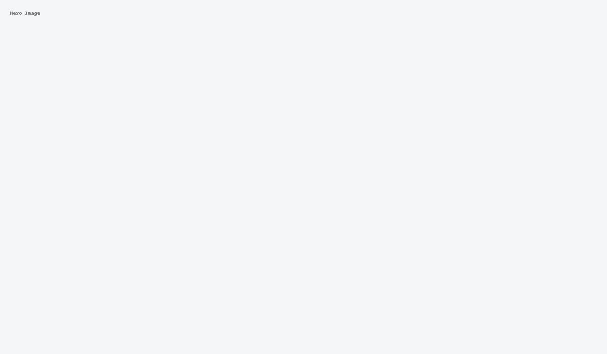
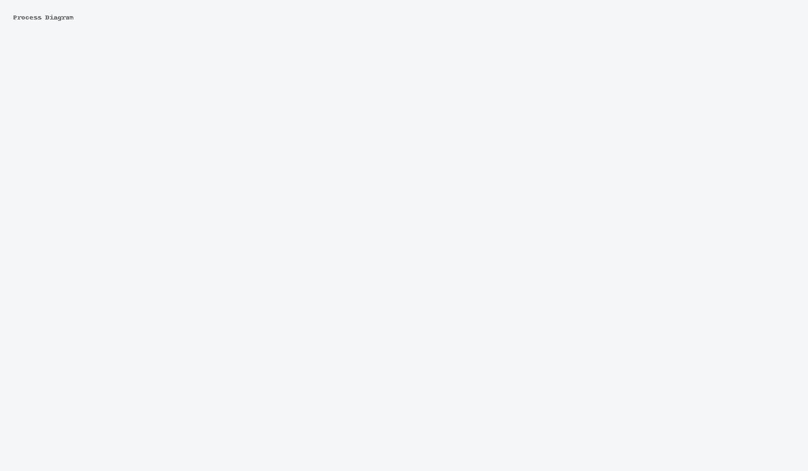
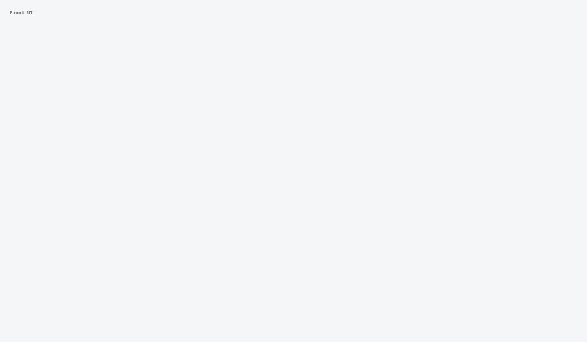

COVID Oximetry @ Home
Designing a citizen-facing tool for patients to submit home oxygen saturation readings and a clinician dashboard to review and act on out‑of‑range results, aiming to reduce hospital admissions through early intervention.
Context & Problem
The COVID Oximetry @ Home initiative enabled patients at risk of deterioration to monitor their oxygen saturation using a pulse oximeter provided by their GP or hospital. At the time, most data submission relied on manual phone check‑ins or SMS surveys, placing strain on clinical teams and risking delays in identifying patients whose oxygen levels were dropping.
We proposed a digital front end for citizens to record readings directly into an NHS‑branded interface, paired with a clinician-facing backend to triage out‑of‑range readings. The service needed to work for patients with limited digital literacy while meeting NHS England’s clinical safety and governance requirements.
Objectives & Constraints
- Enable easy, secure input of oximetry readings by patients or carers.
- Notify clinicians when readings fell below thresholds.
- Provide a clear review interface for clinicians to manage alerts.
- Work alongside manual check‑in pathways.
- Comply with NHS data security, clinical safety (DCB0129/DCB0160), and accessibility standards.
Constraints included rapid delivery timelines, no integration with patient record systems in the MVP, and the need to support patients without smartphones through an accessible mobile‑optimised web app.
Process
Discover
Collaborated with NHS user researchers running interviews and usability sessions with patients and clinical teams. We mapped the end‑to‑end journey from receiving an oximeter kit to submitting readings and clinician follow‑up.
Design
Led creation of the service blueprint covering citizen and clinician journey stages, backstage processes, and infrastructure. Produced patient and clinician flow diagrams and low‑fidelity wireframes in Figma.
Deliver
Presented designs to the NHS England design assurance panel, demonstrating alignment with the NHS Service Standard, accessibility compliance, and a proposed clinical safety case approach.
Key Decisions & Trade‑offs
“To meet urgency requirements, we chose a standalone web application for the MVP rather than integrating with clinical systems, with API integration planned for later phases.”
Outcomes & Impact
Although the concept passed early design assurance, the project was not taken forward due to shifting pandemic priorities and funding constraints. However, the blueprint, flows, and accessibility patterns informed subsequent remote monitoring pilots.
Reflections & Next Steps
This project reinforced the importance of inclusive design in health crisis technology — balancing simplicity for citizens with clinical safety requirements. The design patterns developed could be adapted for chronic condition remote monitoring.